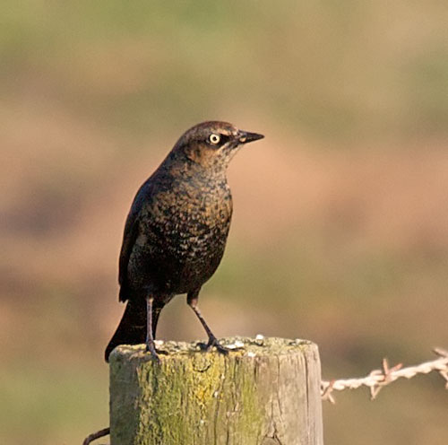

| These photographs accompany records that have been recently submitted to the committee. This record
has been ACCEPTED.  Rusty Blackbird (Euphagus carolinus) 13 November 2010, Guadalupe, SBA 2010-182 © 2010 Matt Brady Back to CBRC Rare Bird Photos |